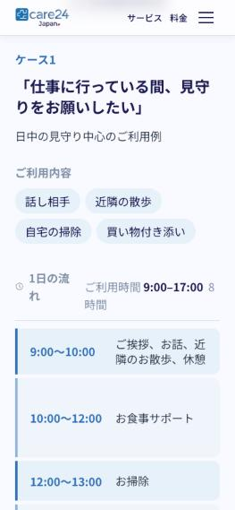
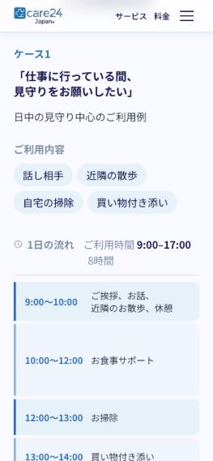
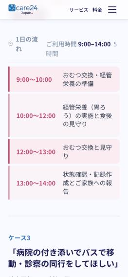
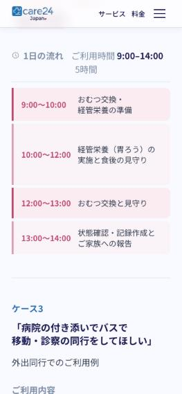
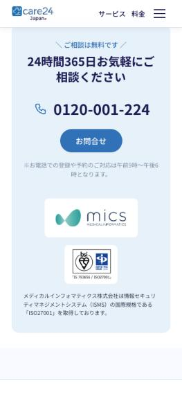
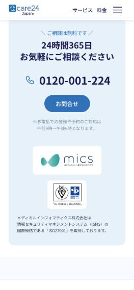
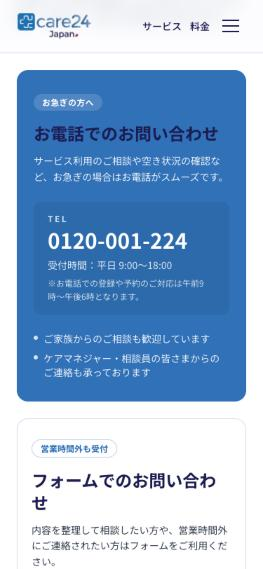
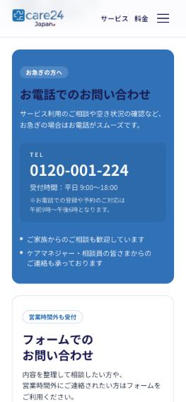

Care24Japan Revision Report — Sheet (7)
Summary
Every row that was still open in sheet (7) was about Japanese line breaks on iPhone SE (375px), plus a few desktop line breaks. Feedback J16 changed the approach: the client asked for natural phrase-based wrapping at every screen size, without hardcoded <br> tags. Earlier rounds fixed each sentence with a hand-placed break, so every new sentence needed its own patch.
This round replaces that with one rule for the whole site:
lib/phrase.tssplits Japanese into phrases with Google's BudouX. A few extra rules come from the client's approved breaks:なります,ください,です, andますnever start a line.- A closing phrase of ≤2 characters stays with the phrase before it (
1日の流れ). お気軽にand short〜のmodifiers stay with the next phrase (あなたのお困りごと,近隣のお散歩,お急ぎの場合は).- A line may break after
にて. components/PhraseText.tsxrenders each phrase as an unbreakable unit, with a break opportunity (<wbr>) between units. A word therefore never splits in the middle, including on iOS Safari, which does not support the CSS-onlyword-break: auto-phrase.- It is used for all Japanese copy on every page: home, contact, FAQ, pricing, fees, service flow, use case, company, navbar, footer, and sticky CTA.
Rows already marked OK です (1–5, 7–13, 15–16, 18–22, 24) were not reopened. Row 9 duplicates row 10, and row 25 is empty.
Results by area
Before = live site www.care24.jp (current production code), measured in the browser on 2026-09-30.
After = this branch, production build (pnpm build && pnpm start).
Breaks are written with /. Mobile values are at 375px (iPhone SE) and desktop values at 1280px.
TOP page — About (#6, row 8)
| Item | Before | After | Why |
|---|---|---|---|
| Subtitle (SP) | 保険では足りない時間を、有資格者 / がサポートします。 | 保険では足りない時間を、 / 有資格者がサポートします。 | Matches the client's correct break exactly. |
| Body (SP) | …サポートや、ご / 家族の不安に… | …サポートや、 / ご家族の不安に… | ご家族 no longer splits. The approved desktop break is unchanged. |
TOP page — ISMS statement (#14, row 16 / J16)
| Item | Before | After | Why |
|---|---|---|---|
| Home contact block (SP) | …株式会社は情報セキュリ / ティマネジメントシステム… | …株式会社は / 情報セキュリティマネジメントシステム（ISMS）の / 国際規格である「ISO27001」を取得しております。 | Phrase wrapping keeps the compound word whole. |
| Home contact block (PC) | …情報セキュリティマ / ネジメントシステム… | …株式会社は / 情報セキュリティマネジメントシステム（ISMS）の / 国際規格である… | The hardcoded \n in Atlas (情報セキュリティ\nマネジメント) was the "hardcoded break" J16 rejects. It was removed from home-contact.isms with scripts/atlas/patch-task14-isms-breaks.ts, and only that field changed. |
| Footer (PC) | …国際規格で / ある… | Breaks only between phrases | Same component. |
TOP page — Pricing link (#17, row 19)
| Item | Before | After | Why |
|---|---|---|---|
| Pricing card link (PC) | 詳しくはこちら（料金ページ）をご確認く / ださい。 (nursing card) | 詳しくはこちら（料金ページ）をご確認ください。 on one line (1024px and 1280px) | The desktop copy is locked to one line from lg, as requested in J19. |
| Pricing card link (SP) | Already OK | 詳しくはこちら（料金ページ）を / ご確認ください。 | Unchanged. |
Contact page (#25a, row 28)
| Item | Before | After | Why |
|---|---|---|---|
| Phone card description (SP) | …空き状況の確認な / ど、お急ぎの場合は… | サービス利用のご相談や空き状況の確認など、 / お急ぎの場合はお電話がスムーズです。 | Matches the client's break exactly. The card's mobile padding went from 24px to 16px, so the 21-character first clause fits. |
| Phone card description (PC) | Unchanged | …確認など、 / お急ぎの場合は… | Matches the client's break. |
| Phone hours note (SP) | ※お電話での登録や予約のご対応は午前9 / 時〜午後6時となります。 | ※お電話での登録や予約のご対応は / 午前9時〜午後6時となります。 | Matches the client's break exactly. |
| Form card title (SP) | フォームでのお問い合わ / せ | フォームでの / お問い合わせ | Same orphan problem, fixed by the same rule. |
TOP page — Sticky footer CTA and contact banner (#25b, row 29)
| Item | Before | After | Why |
|---|---|---|---|
| Sticky phone note (SP) | ※お電話での登録や予約のご対応 / は午前9時〜… | ※お電話での登録や予約のご対応は / 午前9時〜午後6時となります。 | Matches the client's break exactly. The mobile button padding is 4px tighter so the first line fits. |
| Sticky left text (PC) | 24時間365日、お気軽にお問い合わせく / ださい。 | 24時間365日、 / お気軽にお問い合わせください。 | Matches the client's break exactly. At tablet width (768px), the headset icon is hidden and the text is 12px so the same two lines fit. |
| Sticky middle note (PC) | …午前9時〜午後6時 / となります。 | ※お電話での登録や予約のご対応は / 午前9時〜午後6時となります。 | Matches the client's break exactly. |
| Contact banner heading (SP) | 24時間365日お気軽にご / 相談ください | 24時間365日 / お気軽にご相談ください | Matches the client's break exactly. |
| Banner phone note (SP) | …午前9時〜午後6 / 時となります。 | …ご対応は / 午前9時〜午後6時となります。 | Matches the client's break exactly. |
TOP page — Problems closing line (#26, row 30)
| Item | Before | After | Why |
|---|---|---|---|
| Closing line (SP) | Care24Japanが、あなたのお困りごと / をサポートします。 | Care24Japanが、 / あなたのお困りごとをサポートします。 | No phrase is split any more. The CMS text has 、 after が, which the client's two suggested layouts do not have, so the result is close to their three-line option but not identical. The copy was not changed (the CMS owns it). |
TOP page — Use-case examples (#27 row 31, #28 row 32)
| Item | Before | After | Why |
|---|---|---|---|
| Case 1 heading | …間、見守 / りをお願いしたい」 | 「仕事に行っている間、 / 見守りをお願いしたい」 | Matches the client's break exactly. |
| Schedule header (all cases) | 1日の流 / れ, …8 / 時間 | 1日の流れ, 8時間 (never split) | The label is locked to one line, and a short closing phrase always stays attached. |
| Case 1 9:00〜10:00 | ご挨拶、お話、近 / 隣のお散歩、休憩 | ご挨拶、お話、 / 近隣のお散歩、休憩 | Matches the client's break exactly. The time column is narrower on mobile (104px, 16px text), so the activity column fits about 11 characters. |
| Case 3 heading | …バスで移 / 動・診察… | 「病院の付き添いでバスで / 移動・診察の同行をしてほしい」 | Matches the client's break exactly. The heading is 20px on phones with balanced lines. |
| Case 3 13:00〜14:00 / 15:30〜16:00 | ご挨拶、お着換 / え、…, ご自宅到着、お着 / 替え | ご挨拶、お着換え、 / トイレ介助, ご自宅到着、お着替え | Matches the client's breaks exactly. |
| Case 2 10:00〜12:00 | 経管栄養（胃ろ / う）の実施と食後 / の見守り | 経管栄養（胃ろう）の / 実施と食後の見守り | 胃ろう is whole. The client's exact break (…の実施と / 食後の見守り) needs 13 characters per line, and the column fits 11 at 375px. |
| Case 2 12:00〜13:00, 13:00〜14:00 | おむつ交換と見守 / り, 状態確認・記録作 / 成とご家族への報 / 告 | おむつ交換と見守り, 状態確認・記録作成と / ご家族への報告 | Matches the client's breaks exactly. |
TOP page — Service flow (#29, row 33)
| Item | Before | After | Why |
|---|---|---|---|
| Step 01 text (SP) | WEBまたはお電話にてお / 気軽にご相談ください。 | WEBまたはお電話にて / お気軽にご相談ください。 | Matches the client's break exactly. |
Other pages (same rule, not in the sheet)
| Item | Before | After | Why |
|---|---|---|---|
| Service-flow page steps | 4つのス / テップ, ケアサポータ / ー | Break between phrases only | The same J16 rule is applied site-wide. |
| FAQ questions | …どのようなサー / ビスですか？, 何で / すか？ | Break between phrases only | Same. |
| Fees rate table (SP) | ケアサポ / ーター column header | ケアサポーター whole. The table uses 16px text on phones so it still fits without scrolling. | Same. |
| Course item list (SP / tablet) | イベントへの出 / 席, ケアマネジャー / との連携 | One column on phones and at md, so every item fits on one line | A two-column list is ~150px per column, too narrow for these phrases. |
| Care/nursing price (320px) | /時間 alone on a line | 税抜 /時間 wraps as one group | Prevents an orphan on the smallest phones. |
Screenshot evidence
All screenshots are in docs/revision-7/. Before = live site, After = this branch.
| Area | Before | After |
|---|---|---|
| Case 1 (#27) |  |  |
| Case 2 + Case 3 heading (#28) |  |  |
| Contact banner + ISMS (#14, #25b) |  |  |
| Contact page (#25a) |  |  |


After only:


Verification performed
- Automated orphan audit in the browser. A script measured every rendered Japanese text block line by line. It flagged lines of ≤2 characters, lines starting with a particle (
は/の/を/が/に/で/す…), katakana words split across lines, and horizontal overflow. - Production build, home at 375px: 174 blocks, 0 findings, no overflow, no console errors.
- Home at 320, 375, 768, 1024, and 1280px: 0 findings.
/contactat 320, 375, and 1280px: 0 findings./pricing,/service-flow,/use-case,/faq(all answers expanded),/fees, and/companyat 375px: 0 findings.- English pages. Phrase wrapping is never applied to English text (0 instances on
/en). - Unit tests (
lib/phrase.test.ts): every/break the client wrote in sheet (7) is checked as an allowed break point, and every word the client flagged (情報セキュリティ,お気軽,胃ろう,見守り,午後6時,ご対応は,1日の流れ) is checked never to split. - Build and test commands, all exit 0:
pnpm test(all 13 batches),pnpm lint,tsc,pnpm build.pnpm startreturned HTTP 200 on the 11 routes checked. - Atlas ISMS patch. Before and after the write, the whole published home page was compared: 34 blocks, and only
home-contact.ismschanged. The English rows are identical.
Notes for the client
- Real iPhone check is still needed. All checks ran in a desktop browser at iPhone SE width. Phrase wrapping uses
word-break: keep-allplus<wbr>, which iOS Safari supports, but it has not been seen on a physical device. - Deploy the branch soon. The ISMS text in Atlas no longer has its hardcoded break. Until this branch is deployed, the live site with the old code shows
情報セキュリティマ / ネジメントon desktop. - Two layouts differ slightly from the sheet: #26 (a
、in the CMS copy) and Case 2 10:00〜12:00 (the column is 2 characters too narrow at 375px). Both break only between phrases. If an exact match is required, the client offered to shorten the text; that is the simplest fix for these two. - At 320px some sentences use one more line than at 375px (for example
…ご対応は / 午前9時〜 / 午後6時となります。in the contact phone box). The breaks still fall only between phrases.